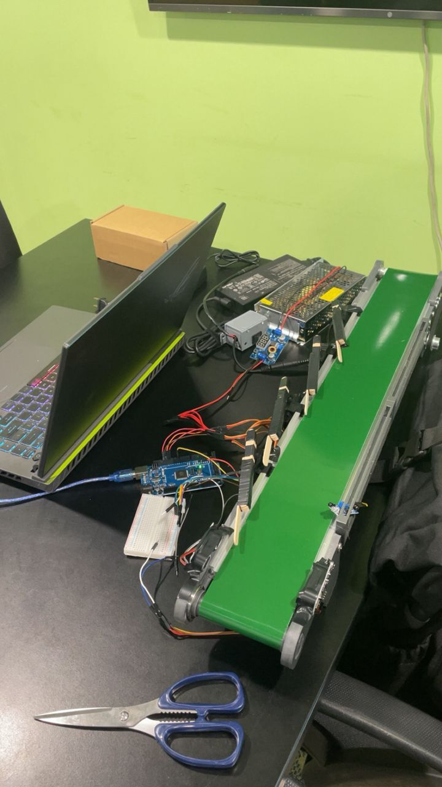
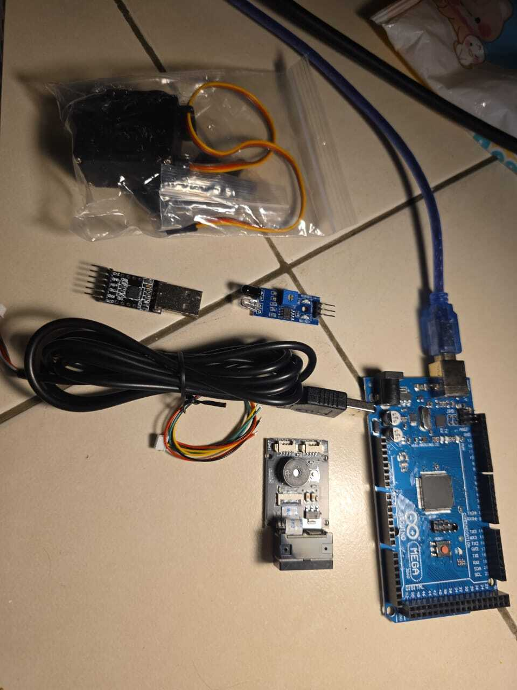
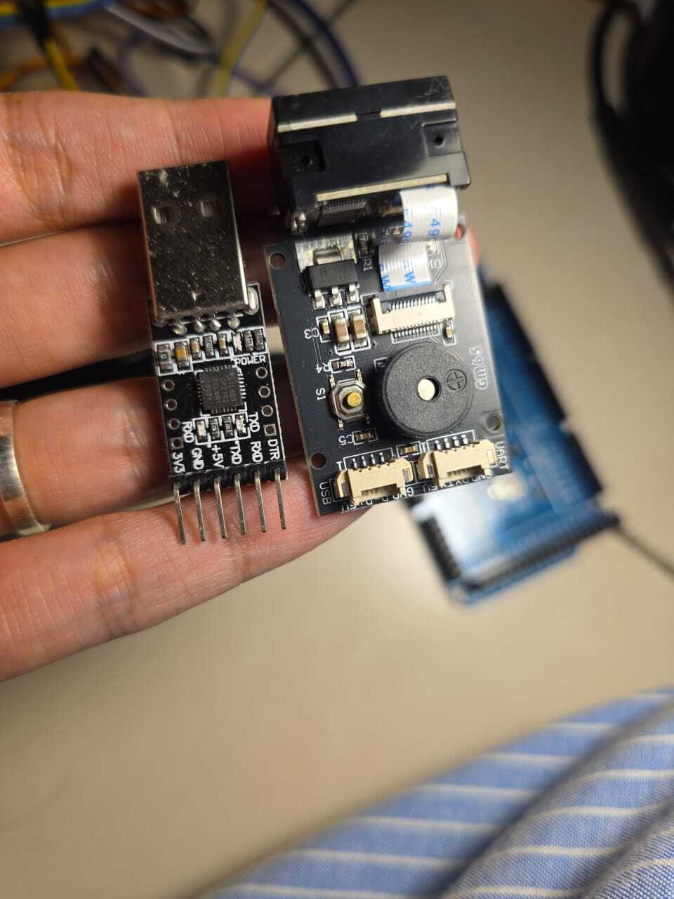
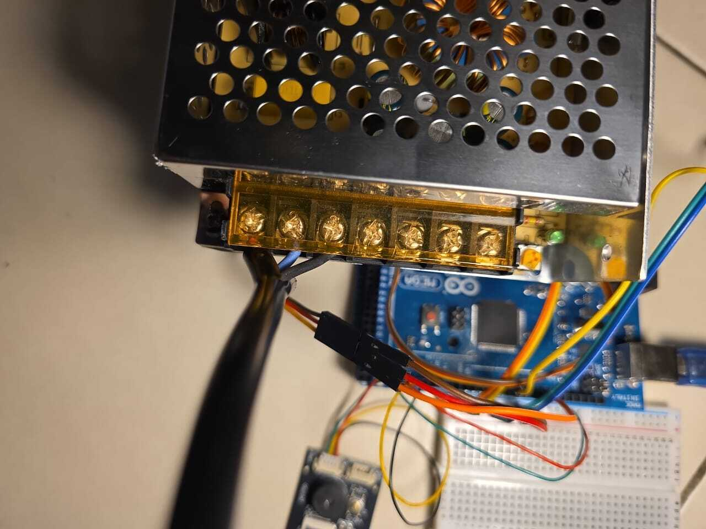
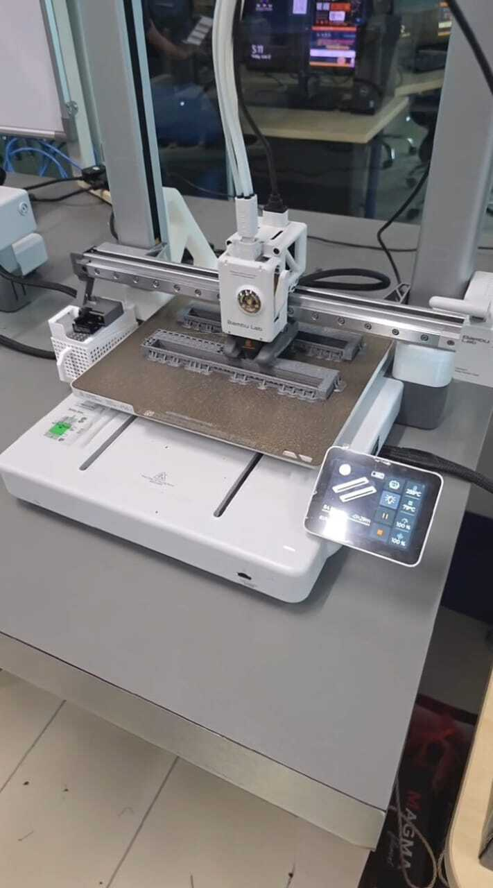

Arduino Mega 2560
Used as the main controller for sensor readings, barcode processing, system logic, and servo commands.
MECHATRONICS • EMBEDDED SYSTEMS • AUTOMATION
A physical conveyor-based prototype designed to identify incoming items using barcode and sensor data, process the information using an Arduino Mega, and automatically route packages using servo-driven sorting mechanisms.

Diploma Final Year Project01 • OVERVIEW
The goal of this project was to develop a prototype warehouse sorting system capable of identifying packages and directing them toward predefined destinations without requiring manual sorting at each stage.
The project combined mechanical construction, embedded programming, sensors, barcode communication, servo actuation, conveyor control, and power distribution into a single integrated prototype.
02 • OBJECTIVE
Manual sorting becomes increasingly inefficient as the number of packages and destinations increases. The prototype explored how package identification and automated routing could be combined into a small-scale warehouse system.
Instead of treating sensing, identification, mechanical movement, and control as separate tasks, the project required all of them to operate as one coordinated system.
03 • SYSTEM WORKFLOW
The package is introduced into the sorting line and transported toward the sensing and identification area.
Sensor inputs are used to detect the presence and position of an incoming package.
A GM65 barcode scanner reads the barcode associated with the package and sends the identification data to the controller.
The Arduino Mega processes the barcode and sensor information and determines the required destination.
The appropriate servo-driven gate is activated to redirect the package toward its assigned route.
04 • IMPLEMENTATION
Used as the main controller for sensor readings, barcode processing, system logic, and servo commands.
Provided item identification data used by the controller to determine the required sorting destination.
Used for package detection, positioning, and supporting the timing of automated sorting operations.
MG996-class servo motors drove the mechanical sorting gates used to redirect packages.
The conveyor transported items between detection, identification, and sorting stages.
A custom prototype power arrangement and step-down converters were used to provide appropriate supply levels to the different components.



05 • CHALLENGES
Sensors and servo mechanisms had to remain correctly positioned relative to the conveyor. Temporary mounting methods were useful during development but introduced alignment and reliability problems.
The project required the barcode scanner, sensors, conveyor, controller, and servo mechanisms to operate in the correct sequence rather than simply working independently.
Moving and reassembling the prototype affected sensor positioning and mechanical calibration, highlighting how strongly physical reliability depends on proper mechanical support and repeatable mounting.
06 • RESULTS
The project demonstrated the complete concept of identifying packages, processing the information, making an automated sorting decision, and physically routing items using electromechanical actuators.
07 • WHAT I LEARNED
The project reinforced that successful automation depends on the interaction between mechanical construction, electrical systems, control logic, sensors, and software. A component can work perfectly by itself and still fail when integrated poorly into the overall system.
It also gave me practical experience with iterative troubleshooting: identifying whether a problem originated from software logic, wiring, power supply, sensing, or mechanical alignment instead of assuming every failure was a programming issue.
08 • FUTURE IMPROVEMENTS

Replace temporary mounting with properly designed 3D-printed brackets for sensors and servo assemblies.
Introduce a repeatable calibration procedure for sensor positions and sorting gate movement.
Record barcode events and sorting results for monitoring, debugging, and warehouse statistics.
Connect the prototype to a higher-level inventory or warehouse management system.
{kind=link}
{kind=link}
{kind=link}
{kind=link}